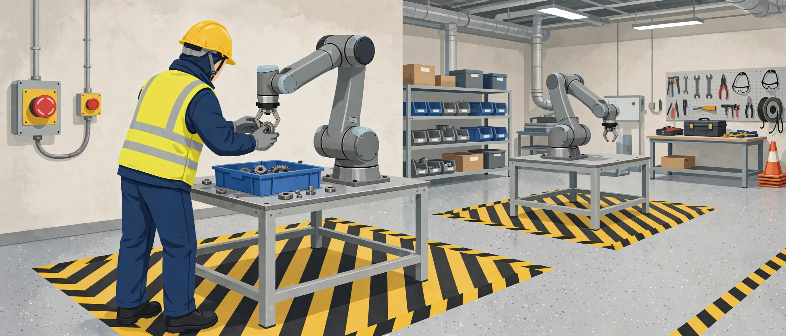

SmartCiti.X long-form series · AGI Future Foundation
From First Simulation to a Real Machine
The Robotics Training Pipeline

The hardest job in a modern factory is not the one the robot does. It is the one the human does next to the robot: the person who sets the cell up, notices when the cycle sounds wrong, clears a fault without reaching into a moving envelope, teaches the arm a new path by hand, and knows the difference between a machine that is safe and a machine that is merely stopped. Factories are filling with robots faster than they are filling with people who can work beside them. That gap — between the machine on the floor and the skill to run it — is the problem a robotics training pipeline exists to close, and it is the problem this article follows from the first simulation to the first real machine.
The bottleneck is the technician, not the robot
The numbers behind the gap are public and stark. The U.S. Bureau of Labor Statistics projects employment for industrial machinery mechanics to grow 17.8% between 2025 and 2035 — from about 446,900 jobs to about 526,600 — with roughly 44,400 openings a year. That is the fastest growth among the occupations in its mechanical-skills group, and more than five times the 3.5% projected growth for all occupations. Electricians are projected to grow 9.2% over the same period, with about 72,700 openings a year; heating, air conditioning and refrigeration mechanics 10.9%, with about 40,600 openings a year. These are projections, not guarantees, and they count replacement hiring as well as new jobs — but the direction is unambiguous: the people who install, maintain, and repair machines are in demand, and the demand is growing faster than the workforce that supplies them.
The manufacturing picture is wider. A 2024 joint study by the Manufacturing Institute and Deloitte found that U.S. manufacturing could need as many as 3.8 million workers between 2024 and 2033, and that more than 1.9 million of those jobs could go unfilled if workforce challenges are not addressed. The study's authors note that the need is concentrated in higher-skill roles — including industrial maintenance technicians — and that 65% of manufacturers polled said attracting and retaining talent was their primary business challenge. A robot, however capable, does not solve that problem. It moves it: every robot installed creates a need for someone who can install it, programme it, maintain it, and work safely beside it.
That is why a robotics training pipeline matters, and why it matters in a specific way. The pipeline is not about teaching people to admire robots, or to write code in the abstract. It is about producing a particular kind of worker: someone who is safe around moving machinery, who can read a cell the way an electrician reads a panel, who can hand-guide an arm through a path, hand a part over at the handover point, and stop the line — correctly, calmly, and without hesitation — when something is wrong. Everything in this article is organised around that worker, and around the sequence that produces them.
The pipeline, stage by stage
A serious training pipeline has stages, and the stages have gates. A learner does not go from a classroom to a live cell in one step; they move through a sequence in which each stage earns the next. The pipeline below is a model — the shape a programme would have to take — not a description of a programme that exists. SmartCiti.X has no cohort, no cell, and no learners today. What it has is a demonstration scenario that models the first stage, and the rest of this article is about what the later stages would have to contain.
Stage 0 — Foundations. Before anyone touches a robot, they learn the ground the robot stands on: safety procedures, PPE, hazard recognition, measurement, tools, and following a procedure in order. The SmartCiti.X learner platform covers this ground with two fundamentals-tier scenarios: a safety-procedures scenario (identify the hazards, select PPE, check the fit, work the task, report) and a K-12 AR/VR foundations scenario (measure, tools, safety). This stage is not glamorous, and it is not optional. A learner who cannot name the hazards in a bay, select the right PPE, and report a near-miss is not ready for a machine that can hurt them. The gate out of Stage 0 is demonstration: the learner shows, on real equipment and in person, that they can run the safety procedure without prompting.
Stage 1 — Simulation. The learner meets the robot in a simulation: a virtual cell, a virtual arm, a virtual task. The platform's robotics scenario is a Stage 1 artefact — five steps in a shared cell. First, the safety zone: PPE check, confirm the cell boundary and the e-stop. Second, the control panel: select the training mode and confirm hand-guiding is on. Third, a guided task: hand-guide the arm through a pick-and-place path. Fourth, a handover: the robot presents the part and the learner takes it at the handover point. Fifth, return the arm to home, log the run, and debrief with the coach. The point of Stage 1 is not to teach the machine. It is to teach the shape of the work — the sequence, the zones, the handover, the habit of logging — so that when the learner meets the real machine, their attention is free for the things simulation cannot teach. The gate out of Stage 1 is a recorded, reviewed simulation run: the learner's steps, checks, and mistakes visible to a coach, not just a pass mark on a screen.
Stage 2 — Guided real work. The learner moves to a real cell, with a real arm, under a coach's direct supervision. The tasks are the same ones they rehearsed — pick-and-place, handover, homing — but now the arm has weight, the gripper has force, the e-stop is a physical button, and the boundary is a line on the floor that matters. The coach's job in this stage is not to demonstrate; it is to watch, to interrupt, and to ask the learner what they noticed. The gate out of Stage 2 is supervised competence: the learner can run the full sequence on the real cell, with the coach present, without intervention.
Stage 3 — Supervised independence. The learner works the cell alone, with the coach nearby and the run logged. New tasks appear: a different part, a different path, a fault introduced deliberately — a sensor that does not read, a gripper that drops a part, a cycle that stops mid-path. The learner's job is not only to run the cell but to notice when it is wrong and to stop it correctly. The gate out of Stage 3 is fault response: the learner detects a fault, stops the cell by the right method, and reports it — because a technician who can run a cell but cannot stop one safely is a hazard.
Stage 4 — Integration and the real floor. The learner works on a production floor, alongside other trades, on real work, under a journeyman. This is where the pipeline meets the world: other people in the space, a schedule, a customer, a part that has to be right. No simulation prepares a learner fully for this stage, and no programme should pretend it does. The gate out of Stage 4 is not a test; it is a record — supervised hours, observed tasks, and a journeyman's judgement that the learner is ready to work without one.
Stage 5 — The credential, elsewhere. The pipeline ends outside the programme. Whatever credential a robotics technician carries — an employer certification, a vendor credential, a state or industry recognition — is granted by the body that owns it, not by the training provider and not by a simulation. A programme that claims to certify its own graduates is selling its own stamp. The honest programme prepares learners for external credentials, tracks their results, and publishes them.
That is the pipeline. Five stages, four gates, one external ending. It is deliberately slow at the start and deliberately strict in the middle, because the cost of a learner who reaches a real cell unprepared is measured in injuries, not in test scores.
The shared cell: what the scenario actually teaches
The platform's robotics scenario deserves a close reading, because it is the most concrete thing SmartCiti.X has built in this area, and because its design choices reveal what the programme's authors think matters. The scenario is titled "Robotics — human-robot integration in a shared cell," and its description is grounded in the SmartCiti.X repository's own framing: "Gamified training to enhance robotic and human integrations." The repository describes an eleven-simulator bundle as part of its offering; the scenario cites that as repository copy, not as something verified live here, and names no simulator beyond it. That restraint is worth noting: the scenario does not claim capabilities it cannot show.
The scenario's five steps map onto the four collaborative operation modes that the safety standards define, and it is worth naming those modes, because they are the vocabulary a technician needs. Under ISO/TS 15066 — the technical specification for collaborative robot applications, whose contact force and pressure limits have now been absorbed into the revised ISO 10218-2:2025 — the four modes are: safety-rated monitored stop, in which the robot stops before a human enters the workspace and does not move while a human is present; hand guiding, in which an operator physically guides the robot using a hand-guiding device and the robot moves only while the operator applies force, with speed and force limited; speed and separation monitoring, in which the robot slows or stops as a human approaches; and power and force limiting, in which the robot is designed to limit contact forces below pain and injury thresholds. The scenario's second step — confirm hand-guiding is on — and its third — hand-guide the arm through the pick-and-place path — are a direct rehearsal of the hand-guiding mode. Its first step — confirm the cell boundary and the e-stop — is the safety-rated monitored stop made into a habit. Its fourth step, the handover, is the moment the modes meet the human: the robot presents the part, the learner takes it at the handover point, hands clear of the cell.
The scenario's stations make the same point in physical terms. There are three: a safety zone (cell boundary, e-stop, PPE), a control panel (mode select, hand-guiding controls), and a work cell (robot arm, task bench, handover point). A learner who can walk that geography — zone, panel, cell — and say what each station is for has learned the cell as a place, not as a picture. And the scenario's final step, returning the arm to home, logging the run, and debriefing with the coach, is the habit that separates a technician from an operator: the machine is left safe, the work is recorded, and someone else knows what happened.
What the scenario does not teach is equally instructive. It does not teach programming: there is no step in which the learner writes or edits a robot programme. It does not teach maintenance: no step involves opening a controller, replacing a gripper, or diagnosing a drive fault. It does not teach risk assessment: the cell boundary is given, not derived. Those are later-stage skills, and a five-step introductory scenario should not pretend to cover them. The scenario's honesty is in its scope: it teaches the first meeting between a human and a robot in a shared cell, and it teaches it well.
Safety is the standard, not the module
Robot safety has a standards architecture, and a training pipeline that ignores it is not a pipeline — it is an accident waiting for a schedule. The architecture, in brief, is this. ISO 10218 is the primary international standard for industrial robot safety, in two parts: Part 1 for robot manufacturers, covering design and construction, and Part 2 for integrators, covering installation, safeguarding, and validation. Both parts were revised in 2025, replacing the 2011 editions, and the collaborative-application content of ISO/TS 15066 — including its force and pressure limits by body region — now lives inside ISO 10218-2:2025. In the United States, ANSI/A3 R15.06 is the national adoption of ISO 10218; the 2025 edition, published across September and October 2025, replaces the 2012 edition that most American compliance documentation still cites, and a third part, written in the US with no ISO counterpart, addresses end users and the use of industrial robot cells. OSHA enforces robot safety through its machine-guarding standard (29 CFR 1910.212) and the General Duty Clause, and recognises R15.06 and ISO 10218 as consensus standards; lockout/tagout, under 29 CFR 1910.147, governs the servicing of machines.
A training programme does not need to turn its learners into standards lawyers. It does need to turn them into people who act as if the standards exist. That means, in practice: every learner can find the e-stop blindfolded, and knows that pressing it is never the wrong decision; every learner understands that a collaborative robot is not a safe robot — safety is a property of the application, its tooling, and the operator's reach, not of the machine alone; every learner knows that the cell boundary is a safety device, not a suggestion; and every learner treats lockout/tagout as the procedure that stands between them and a machine that someone else might restart. The platform's scenario rehearses the first two of those; the later stages of the pipeline would have to teach the rest, on real cells, with real energy, under supervision.
There is a temptation, in writing about collaborative robots, to present them as inherently gentle — the friendly robot that works beside you. That is a marketing image, not a safety fact. A collaborative application is one in which the forces of contact are limited below injury thresholds for the body regions that could be contacted, in the specific application as built and validated. Change the tooling, change the speed, change the part, and the same robot in the same cell can be a different safety case. A technician who understands that will check the application, not the brand name. A technician who does not will learn it the hard way. The pipeline's job is to make sure they learn it the first way.
What simulation gets wrong about machines
The companion article in this series, on AR/VR training for the union trades, sets out in detail what a headset can and cannot teach. The robotics version of that argument is shorter and sharper, because the gap between a simulated robot and a real one is wider than the gap between a simulated panel and a real one.
A simulated robot has no inertia. A real arm, moving at speed, carries momentum that does not stop when the programme stops; it stops when the brakes and the mass allow it to stop. A learner who has only ever worked with a simulated arm will misjudge stopping distances, and misjudging a stopping distance in a shared cell is the kind of error that matters. A simulated gripper never drops a part at an awkward angle, never pinches a glove, never wears. A simulated sensor never drifts, never gets dusty, never reads a reflection as a part. A simulated cell never has the second person in it — the other technician, the supervisor, the visitor — who changes everything about how you move.
None of that makes simulation useless. It makes simulation a first stage, not a substitute. The simulated cell teaches the sequence and the geography; the real cell teaches the physics. A pipeline that confuses the two will produce learners who are fluent in the simulation and dangerous in the cell. The gate between Stage 1 and Stage 2 exists for exactly that reason: the learner's first real run is supervised, slow, and watched, because the simulation has not taught them what the machine weighs.
There is one more thing simulation gets wrong, and it is the most important: it gets the stakes wrong. In a simulation, a boundary breach is a message on a screen. In a real cell, a boundary breach is an event that stops production, triggers a report, and — if the breach was into a moving envelope — could have hurt someone. The platform's scenario handles this as well as a simulation can: its third step's check is "path complete without boundary breach," which treats the boundary as a hard constraint rather than a suggestion. But the feeling of a real boundary — the knowledge that crossing it has consequences — can only be learned where the consequences are real. That is why the pipeline insists on supervised real work, and why no simulation result, however good, should ever be the final gate before a learner works a real cell alone.
The coach is the pipeline
Every stage above has a coach in it, and that is not an accident. The research on immersive training keeps returning to the same finding: learners in complex technical processes, real or virtual, need structured support. The Swiss VR researchers built a help and question system into their simulation for exactly this reason. The NCCER pilot kept instructor demonstration and guided practice in both the VR and the traditional class. The platform's scenarios end every run with a debrief with the coach. A pipeline without coaches is a playlist, not a programme.
What does a coach do that a simulation cannot? They notice the learner's hands, not just their steps. They hear the hesitation before a handover. They ask the question the simulation cannot ask: what did you notice, and what would you do differently? They decide when a learner is ready for the next stage, which is a judgement no rubric fully captures. And they carry the safety culture — the attitude that stopping the line is always the right call, that a near-miss is reported rather than hidden, that the person next to you is your responsibility. That culture is not in any scenario file. It is in the people.
This has a practical consequence for SmartCiti.X's plan: the cost of the programme is not mostly headsets and software. It is mostly coaches — journeymen and technicians who can teach, paid for their time, present on the floor. A funding plan that budgets generously for AR/VR training and thinly for instructors has the priorities backwards. The platform's own dashboard design points at this: its demo mode tracks learner progress through structured events, but its README lists open questions about who owns a real cohort log and what the anonymisation rules would be. Those are governance questions, and governance questions are answered by people, not by software.
From training to manufacturing: why the pipeline ends on a floor
SmartCiti.X's plan pairs robotics training with robotics manufacturing: the same proposed corporation would train technicians and build machines, with a first launch in Louisiana and later work in Indiana. The pairing is not accidental. A manufacturing floor is the destination of the pipeline — the place where Stage 4 happens — and a training programme without a floor to train on is a classroom with expensive toys. Conversely, a factory without a training pipeline is a building full of machines nobody can run. The two halves need each other, and the plan's honesty depends on saying so plainly: the training is not a side project of the manufacturing, and the manufacturing is not a funding mechanism for the training. Each has to work on its own terms, and each has to be judged on its own results.
That judgement needs a gate. The planning documents set Tranche 2 gates for the proposed corporation that include a first manufacturing order or pilot customer signed, alongside the AR/VR pilot, the signed union agreement, the first site, site staff hired, and the first tranche reconciled with a Windfall report drafted. The robotics version of that gate is worth spelling out: a first order proves that someone outside the project wants the machine, which is a different kind of evidence from a simulation passing its checks. But a first order also creates a pressure — to deliver, to cut corners on training, to put a learner on a live cell before they are ready — and the programme's governance has to be strong enough to resist it. The Steward Council model in the Foundation's planning exists for exactly this: humans decide, sign, and move funds, and agents operate only within limits humans set. Whether that model works in practice is unproven, because no Steward Council for any series is verified as seated. It is a plan, not a track record, and this article treats it as one.
There is also a sequencing question the plan has to answer in writing before it spends money. Does the training come first, so that there are technicians ready when the machines arrive? Or does the manufacturing come first, so that there is a real floor to train on? The honest answer is probably that they have to grow together, in small steps, with the training always slightly ahead of the machines — because a machine without a technician is a liability, while a technician without a machine is merely waiting. The platform's current state reflects that order: the simulation exists, the cell does not. That is the right order for a demonstration. It would be the wrong order for a factory.
What would have to be true
A reader who has followed this far is entitled to a plain list: what would have to be true before anyone could honestly say that SmartCiti.X trains robotics technicians? Not the full list — that would be a business plan — but the load-bearing items.
A corporation would have to exist, formed with counsel, with a charter, bylaws, EIN, bank account, and cap table, and with its name and trademark cleared. Today it does not. A site would have to exist — a real building, purchased or leased, with permits, inspections, insurance, and safety systems complete — in Louisiana or Indiana, and no site, city, address, price, or seller is named today, because none is signed. A union agreement would have to be signed, covering what it actually covers: curriculum, wages, placement, or all three. Today no agreement exists, and the platform's own files record that no hall is mapped to any scenario. Real cells would have to exist — robots, controllers, tooling, guarding, validated to the current standards — and coaches would have to be hired to run them. A curriculum would have to exist beyond the six demonstration scenarios: dozens of scenarios per trade, written with journeymen, tested with learners, revised against real outcomes. An assessment model would have to exist that triangulates simulation records, instructor observation, and supervised work, and that prepares learners for credentials granted by external bodies. And a measurement system would have to exist that tracks not enrolment or confidence but outcomes: how many learners complete, how many pass external credentials, how many are employed a year later, and how many are still in the trade in five years. None of that exists today. The demonstration exists. The pipeline, as described here, is a design for what would come next.
Frequently asked questions
What is the fastest-growing job in this area?
Among the occupations discussed here, industrial machinery mechanics, projected by the Bureau of Labor Statistics to grow 17.8% between 2025 and 2035, with about 44,400 openings a year. Electricians (9.2%, about 72,700 openings a year) and HVAC mechanics (10.9%, about 40,600 openings a year) are also projected to grow well above the 3.5% average for all occupations. These are projections, not guarantees.
Can I learn to work with robots entirely in VR?
No. Simulation teaches sequence, zones, and the shape of the work. It cannot teach inertia, stopping distances, the feel of a real gripper, or the judgement of a technician who has felt a machine misbehave. The pipeline in this article puts simulation first and supervised real work after it — and treats the first real run as a supervised, watched event.
Are collaborative robots safe?
A collaborative robot is not automatically a safe robot. Safety is a property of the application — the robot, its tooling, its speed, and the operator's reach — validated against standards including ISO 10218-2:2025 and, in the US, ANSI/A3 R15.06-2025. The four collaborative modes (safety-rated monitored stop, hand guiding, speed and separation monitoring, power and force limiting) describe how a shared workspace can be made safe. They do not make any particular cell safe by themselves.
What does the SmartCiti.X robotics scenario actually cover?
One five-step sequence: safety zone and e-stop, control panel and hand-guiding, a guided pick-and-place task, a handover at the handover point, and returning the arm to home with a logged run and a coach debrief. It is a first meeting with a shared cell, not a curriculum, and it does not teach programming, maintenance, or risk assessment.
Does completing the simulation certify me?
No. The scenario states it is simulation only, not certification. Any credential a robotics technician carries is granted by the body that owns it — an employer, a vendor, or an industry body — not by a training provider and not by a simulation.
Is SmartCiti.X hiring or enrolling robotics learners?
Not today. SmartCiti.X is a proposed new corporation, not incorporated, filed, funded, or offered. There is no site, no cell, and no cohort. Inquiries go to the Foundation at x@agifuturefoundation.org.
Glossary
- Cell: the workspace containing a robot, its tooling, and the safety systems around it.
- Collaborative application: a robot application in which humans and robots share a workspace, made safe through one or more of the four collaborative modes.
- E-stop: emergency stop — the control that halts a machine. Pressing it is never the wrong decision.
- Hand guiding: a collaborative mode in which the operator physically guides the robot, which moves only while the operator applies force.
- Handover point: the defined place where a robot presents a part and a human takes it, with hands clear of the cell.
- ISO 10218: the international standard for industrial robot safety; Part 1 for manufacturers, Part 2 for integrators. Both parts revised in 2025.
- ANSI/A3 R15.06: the US national adoption of ISO 10218; the 2025 edition replaces the 2012 edition.
- Lockout/tagout: the procedure (OSHA 29 CFR 1910.147) for ensuring a machine cannot be restarted while it is being serviced.
- Power and force limiting: a collaborative mode in which the robot limits contact forces below injury thresholds.
References
- U.S. Bureau of Labor Statistics, Employment Projections 2025–35 — mechanical skills data: industrial machinery mechanics +17.8%, electricians +9.2%, HVAC mechanics +10.9%, all occupations +3.5%. https://WWW.BLS.GOV/emp/skills/mechanical.htm
- The Manufacturing Institute and Deloitte, "Taking charge: Manufacturers support growth with active workforce strategies" (April 2024), as summarised by the Manufacturing Institute: up to 3.8 million jobs to be filled by 2033, more than 1.9 million at risk of going unfilled, 65% of manufacturers citing talent attraction and retention as their primary challenge. https://themanufacturinginstitute.org/study-manufacturing-in-u-s-could-need-up-to-3-8-million-workers/
- ISO 10218-1:2025 and ISO 10218-2:2025, and ANSI/A3 R15.06-2025 — as summarised in the collaborative robot safety standards guide. https://www.inmotion.global/resources/cobot-safety/collaborative-robot-safety-standards/
- OSHA, Personal Protective Equipment — Safety and Health Topics page. https://www.osha.gov/personal-protective-equipment
- AGI Future Foundation, "SmartCiti.X — W3 Series S10, the Trade Craft Academy" (Article 33). https://www.agifuturefoundation.org/articles/article-33-smartciti-x.html
- SmartCiti.X learner platform, robotics scenario (local files):
scenarios/robotics-integration.json,scenarios/scenarios.json, verified byscenarios/verify.mjs— six scenarios, five steps each, verified 2026-11-07. - Transfr, "Is VR Training Effective?" — the 2022 NCCER / ABC Illinois pilot study. https://transfrinc.com/resources/blog/is-vr-training-effective
- PH Zurich, "Virtual reality improves apprenticeships" (20 June 2023). https://phzh.ch/en/about-phzh/news-events-and-current-topics/news/2023/virtual-reality-improves-apprenticeships/
Nothing in this article is legal, tax, or financial advice, and no signing, membership, payment, investment, or offering is made here. SmartCiti.X is proposed, not incorporated, filed, funded, or offered.